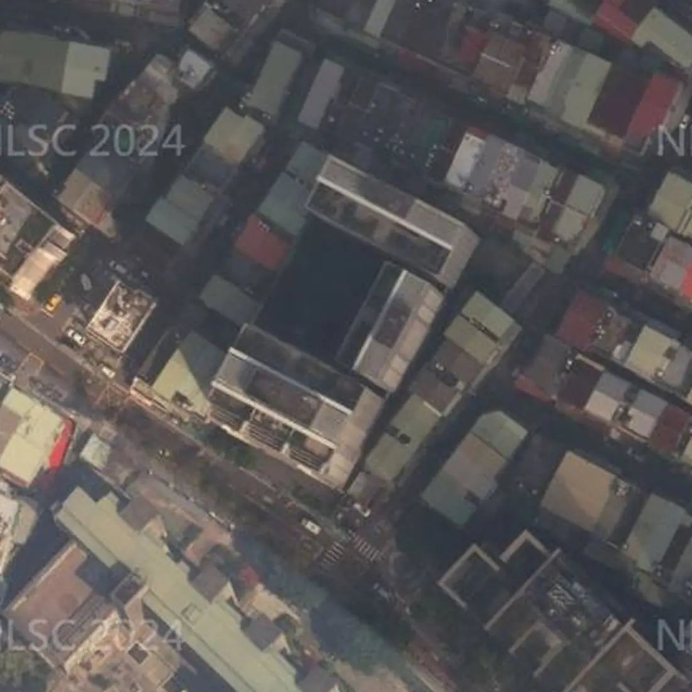

社區分析・文字版
三輝歌劇苑可以買嗎？板橋文化路一段社區優缺點、格局、公設、捷運、日照、學區與看屋重點
帶看三輝歌劇苑時，買方最常問的就是下面這幾題。我把查過的資料整理在這篇，每一題第一段先講結論，跟上面的互動簡報（3D 模型、日照模擬、步行地圖）是同一份資料，數字都標了出處，實際狀況還是要以現場為準。
三輝歌劇苑可以買嗎？先說結論
三輝歌劇苑位於新北市板橋區文化路一段188巷31～39號（單號），屬新埔生活圈，民國105年10月完工，地上19層。走到捷運新埔站（BL08）步行約531公尺、約8分鐘。優點是板南線新埔站步行約 8 分鐘、超商 2 分鐘、中英醫院 4 分鐘、民國 105 年完工・有健身房、閱覽室等公設；要留意的是汽車位不是每戶都有、巷弄社區、面中庭的低樓層要看採光。
適不適合，要看你最在意的是什麼。下面把買方最常搜尋的問題一題一題整理，每題第一段先講結論，數字都標了出處，實際狀況還是以現場為準。

從空中看三輝歌劇苑，再看公設
三輝歌劇苑是 1幢3棟的社區：A棟 19 層在西南側，B棟、C棟 15 層在東側與北側，三棟圍出中庭。西南側隔著巷道是中山國中校地，其他三面多是巷弄裡 4、5 樓的老公寓和透天厝；西北方約 150 公尺的文化路一段上方是捷運環狀線高架。航照拍攝時間早於現況，以現場為準。公設照片是本店經手物件時拍的社區公共空間：挑高大廳與管理櫃台、中庭花園、閱覽室、廚藝教室、健身房、兒童遊戲室；建商資料另寫頂樓有空中花園與開心農場。
三輝歌劇苑格局有哪些？幾房、幾坪？
依實價登錄申報資料（截至 115/11/01 公布），三輝歌劇苑有成交紀錄的住宅以2房最多（19筆），主建物約14.2～18.8坪。
| 房數 | 筆數 | 主建物坪數 |
|---|---|---|
| 2房 | 19 | 14.2～18.8 坪 |
| 3房 | 19 | 23.6～35.7 坪 |
| 其他 | 1 |
資料來源：內政部實價登錄，依申報的「建物現況格局」與「主建物面積」整理；為申報資料，可能與現況不同（例如改過隔間），不代表個別房屋。已排除特殊交易與預售屋，只計住宅用途；同一戶多次成交只計一次，只涵蓋有成交紀錄的戶。資料截至 115/11/01 公布，之後的新成交未納入，以內政部最新資料為準。坪數為主建物面積（不含附屬建物、陽台與公設），平方公尺換算成坪、取小數一位；筆數少於 3 筆的房數併入「其他」。僅供參考，實際以權狀與現場為準。
三輝歌劇苑公設有哪些？公設比多少？
公設有大廳、中庭花園、閱覽室、廚藝教室、健身房、兒童遊戲室；公設比約33%（依實價登錄面積計算）。
公設實際開放時間與使用規定，以管委會公告與規約為準，看屋時可以請管理室帶看。
三輝歌劇苑實價登錄有幾筆成交？
查詢範圍：新北市板橋區文化路一段188巷31～39號（單號）、總樓層 15／19 層，實價登錄共 16 筆（交易期間 2021-09-25～2026-08-10；已排除親友、特殊關係等特殊交易 2 筆）。
資料截至 115/10/21 公布（本社區最近一筆交易日 2026-08-10），之後的成交以實價登錄網最新公告為準；不同戶型、面積不宜直接比較。
三輝歌劇苑到捷運站走路多久？
捷運新埔站（BL08）步行約531公尺、約8分鐘；捷運板橋站（BL07、Y16）4號出口步行約835公尺、約12分鐘。
最近的公車站：致理科技大學步行約400公尺、約5分鐘。
步行距離資料來源：Google 地圖規劃建議路線，實際以現場為準。
三輝歌劇苑日照好嗎？冬天曬得到太陽嗎？
這段日照是以9樓來示意，不是在講哪一戶喔。西南邊對面是中山國中，比較開闊；三棟圍著中庭，面中庭的低樓層棟距比較近。
一般來說低樓層比較容易被擋到，樓層越高影響越小。
日照會因為面向、樓層、前後棟距差很多，看屋時建議上午、下午各去一次，站到窗邊看實際的採光與視野。
太陽位置：天文公式計算；日射：晴天直射理論值，不含散射與雲量；參考政府公開資料；社區以 19 層計（已查證）；結果為示意，實際以現場為準。
三輝歌劇苑學區是哪裡？
依政府公開資料，三輝歌劇苑的學區為新埔國小、中山國中、新埔國中、江翠國中，實際以教育局公告為準。
學區每年可能調整，入學前記得再向學校或教育局確認。
走路到學校：中山國中步行約502公尺、約7分鐘；埔墘國小步行約830公尺、約12分鐘（步行距離資料來源：Google 地圖規劃建議路線，實際以現場為準）。
三輝歌劇苑有車位嗎？車位有多少？
依使照資料，停車位為汽車213・機車230；實價登錄交易中，坡道平面 12 筆、無車位 4 筆。
看屋時建議確認車位的產權登記方式、位置與進出動線，機車位是否需要另外申請。
電動車充電：可以先問管委會的事
- 社區規約或管理辦法有沒有「電動車充電設備設置與管理」的條文？可以提供影本嗎？
- 地下室有沒有公共充電車位？是用公電還是專用電表？
- 住戶在自己車位加裝的申請流程：要附哪些文件（電機技師或承裝業評估、施工切結、保險）？要管委會核准還是區權會決議？
- 住戶電表集中在地下室，還是在各樓層？（影響拉線難度）
充電設備能否加裝，需依社區規約、管委會或區分所有權人會議決議，以及電機技師與台電的用電評估而定。
三輝歌劇苑有管委會嗎？管理方式怎麼樣？
管理方式：設有管理委員會（三輝歌劇苑管理委員會，107/06/15核准報備）。
看屋時可以向管理室確認：社區規約、管理費收取方式、公共基金與近期公共修繕計畫，以及有沒有進行中的社區爭議。
三輝歌劇苑是哪家建設公司、營造廠蓋的？
使用執照（105板使字第00417號）登記的起造人是安信建築經理股份有限公司，承造人（營造廠）是元茂營造股份有限公司。
三輝歌劇苑生活機能方便嗎？超市、超商、市場走路多久？
步行可到：全家便利商店步行約120公尺、約2分鐘；7-Eleven步行約121公尺、約2分鐘；全聯福利中心步行約820公尺、約12分鐘；莊敬公園步行約728公尺、約10分鐘；中英醫院步行約255公尺、約4分鐘。
- 全家便利商店（便利商店）：步行約120公尺、約2分鐘
- 7-Eleven（便利商店）：步行約121公尺、約2分鐘
- 全聯福利中心（超市）：步行約820公尺、約12分鐘
- 莊敬公園（公園）：步行約728公尺、約10分鐘
- 中英醫院（醫療院所）：步行約255公尺、約4分鐘
步行距離資料來源：Google 地圖規劃建議路線，實際以現場為準。地點名稱與位置參考政府開放資料與連鎖店官方門市查詢。
三輝歌劇苑是哪一年完工的？幾層樓、幾戶？
三輝歌劇苑民國105年10月完工、地上19層、地下5層、230戶、鋼筋混凝土造。
| 完工 | 民國105年10月 |
|---|---|
| 樓高 | 地上19層 |
| 地下層 | 5層 |
| 戶數 | 230戶 |
| 結構 | 鋼筋混凝土造 |
| 停車位 | 汽車213・機車230 |
| 管理 | 設有管理委員會（三輝歌劇苑管理委員會，107/06/15核准報備） |
| 公設比 | 約33%（依實價登錄面積計算） |
| 公設 | 大廳、中庭花園、閱覽室、廚藝教室、健身房、兒童遊戲室 |
| 使用執照 | 105板使字第00417號 |
參考政府公開資料；實際以現場與地政登記為準。使用執照依新北市政府工務局使用執照存根影像。
三輝歌劇苑優缺點有哪些？
優點：板南線新埔站步行約 8 分鐘；超商 2 分鐘、中英醫院 4 分鐘；民國 105 年完工・有健身房、閱覽室等公設。要留意：汽車位不是每戶都有；巷弄社區、面中庭的低樓層要看採光。
板南線新埔站步行約 8 分鐘
步行到板南線新埔站約 531 公尺、約 8 分鐘；板橋站 4 號出口約 835 公尺、約 12 分鐘。巷口的公車站「致理科技大學」步行約 5 分鐘。
超商 2 分鐘、中英醫院 4 分鐘
最近的全家、7-Eleven 步行約 2 分鐘，中英醫院約 4 分鐘，全聯福利中心約 12 分鐘。學區：國小「新埔國小」，國中「中山國中」「新埔國中」「江翠國中」，以教育局公告為準。
民國 105 年完工・有健身房、閱覽室等公設
使照 105 年 10 月核發，鋼筋混凝土造，1幢3棟、地上 19 層（A棟）與 15 層（B、C棟）、地下 5 層、230 戶；使照附表汽車位 213 輛、機車位 230 輛，都是地下室內平面車位，已成立三輝歌劇苑管理委員會。 公設有挑高大廳、中庭花園、閱覽室、廚藝教室、健身房、兒童遊戲室。
三輝歌劇苑缺點是什麼？看屋時要確認什麼？
看三輝歌劇苑要先確認的是：汽車位不是每戶都有；巷弄社區、面中庭的低樓層要看採光。
汽車位不是每戶都有
使照附表汽車位 213 輛，社區 230 戶，汽車位不是每戶都有；實價登錄 16 筆裡也有 4 筆沒有車位。有車的話，看屋時記得確認有沒有車位、在哪一層。
巷弄社區、面中庭的低樓層要看採光
社區四周多是巷弄；三棟圍著中庭，面中庭的低樓層棟距較近。看屋時建議白天到窗邊確認採光，並實際開車走一次巷弄進出。
三輝歌劇苑社區分析影片

▶ 【社區分析】三輝歌劇苑｜板橋區文化路一段｜日照・交通・生活機能・實價登錄｜板橋阿陞聊房（YouTube）
三輝歌劇苑附近社區
想一次比較位置，可以看板橋商圈地圖，或回首頁看全部社區分析。
想看三輝歌劇苑？
想知道三輝歌劇苑目前有沒有房子在賣，歡迎聯絡。
☆預約看屋請聯絡：林津陞 0925-635-678
加官方 LINE：@banqiao.asheng，聊天室輸入「攻略」，系統自動傳送《買房避坑攻略》電子檔（約2萬字／38頁）
全國不動產板橋加盟店
經紀業｜非凡不動產有限公司
經紀人｜謝政峯（99）北縣字第002181號
營業員｜林津陞（99）登字第148103號
資料來源：參考政府公開資料（依政府資料開放授權條款使用）；地圖：© OpenStreetMap contributors（ODbL）；本店之前拍攝的社區照片。步行距離與日照為規劃與模擬結果，學區以教育局公告為準，房屋資訊仍須以現場、產權資料及正式文件為準。